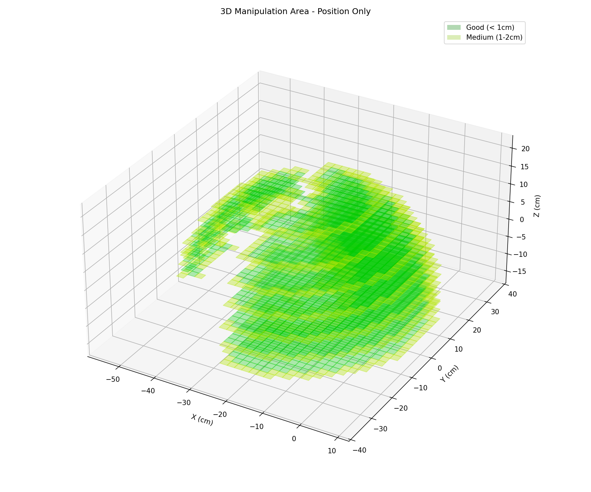
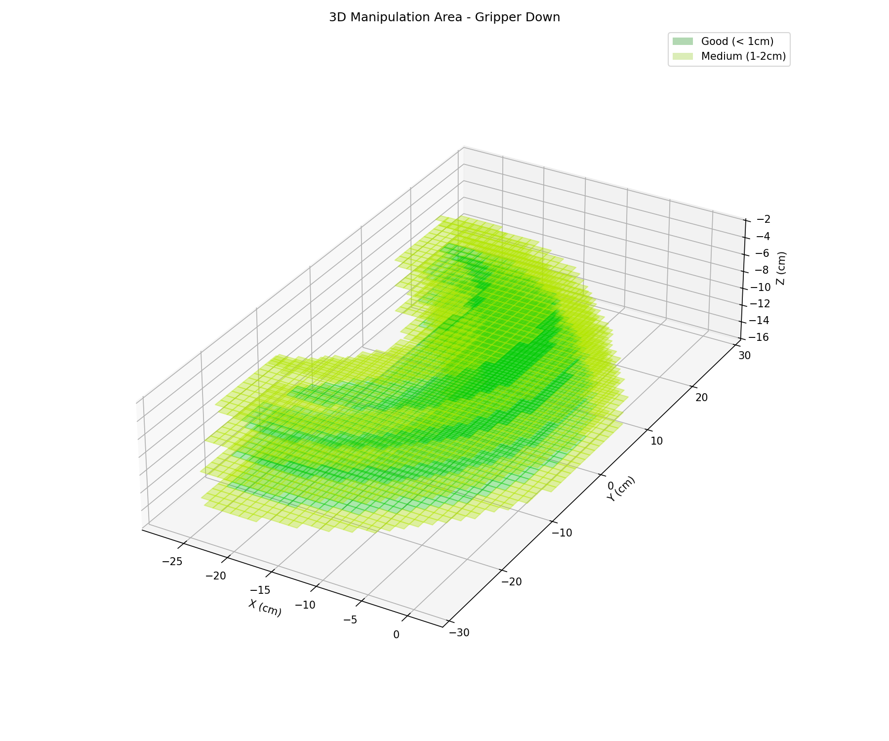
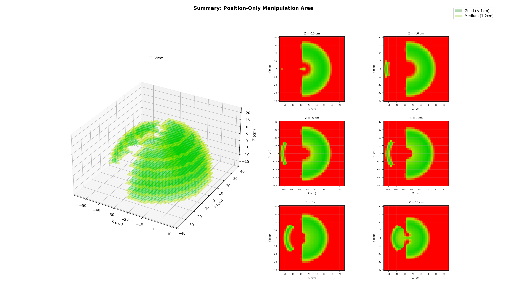
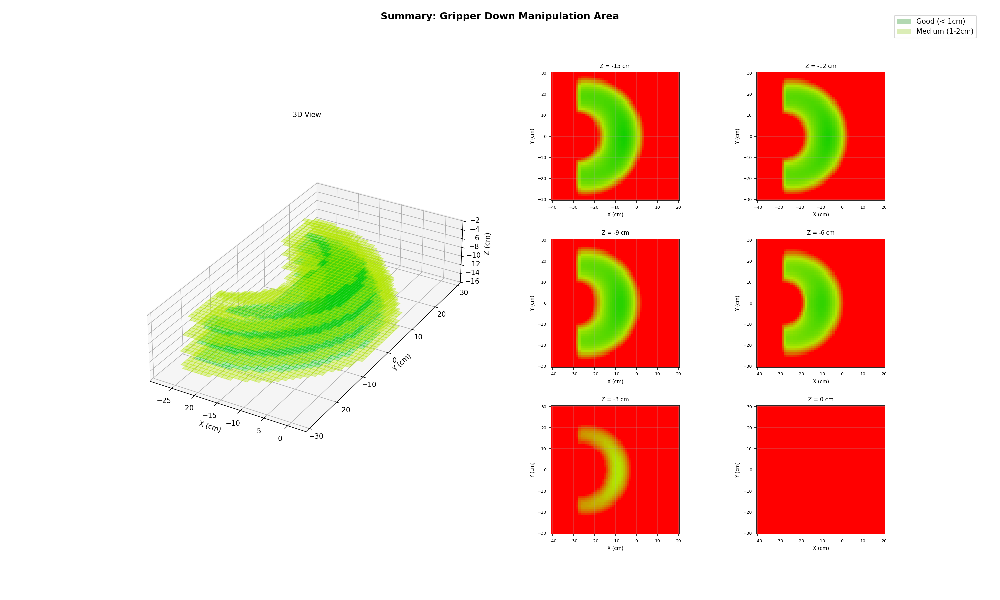
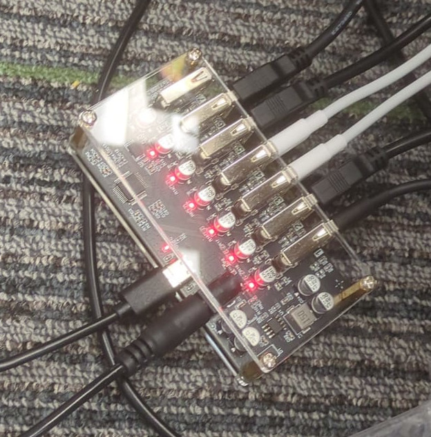

flowchart TD
A["Initial guess θ (often current pose)"] --> B["Compute error"]
B --> C{"Error < threshold?"}
C -->|Yes| D["Done"]
C -->|No| E["Update θ"]
E --> B
C -->|Too many tries| F["Give up"]
SO101 Robotic Arm - Lesson 5
Inverse Kinematics in Depth
Lesson 5 — Inverse Kinematics in Depth
What You Will Learn
By the end of this lesson you will understand:
What Inverse Kinematics (IK) is — how we command a robot by specifying a target position instead of individual joint angles
Analytical vs. Iterative IK — the difference between closed-form geometry and step-by-step numerical solvers
Using IK on the SO-101 — how to perform a simple task such as picking up an object from a fixed location by giving the arm a target coordinate
Quick Recap: The Demo from Lesson 1
In Lesson 1 we saw that IK lets us skip manual joint control.
Instead of saying “rotate shoulder 30°, elbow 45°…”, we simply say “go to (x, y, z)” and the math figures out the angles for us.
Lesson 1 Interactive Demo
Play with a 3-DOF arm to remind yourself how IK feels: IK Demo Visualization
Interactive Demo: 2-Joint 2-Link Arm
Drag the red circle to set a target and watch the arm follow.
The Solving Equations
For a 2-DOF planar arm the equations are compact.
Keep these in mind — we will compare them to the much larger systems used for 3-D and redundant arms later.
Given target \((x, y)\) and link lengths \(L_1\), \(L_2\):
Distance to target: \[d^2 = x^2 + y^2\]
Law of Cosines gives \(\theta_2\): \[\cos(\theta_2) = \frac{d^2 - L_1^2 - L_2^2}{2 L_1 L_2}\]
Two-argument arctangent gives \(\theta_1\): \[\theta_1 = \text{atan2}(y, x) - \text{atan2}\big(L_2 \sin(\theta_2),\; L_1 + L_2 \cos(\theta_2)\big)\]
Tip
These three lines solve the arm exactly. When we add more joints, orientation constraints, or 3-D targets, the equations grow far more complicated — which is why robots like the SO-101 switch to iterative (numerical) solvers.
Interactive Demo: 3-Joint 3-Link Arm with Orientation
Drag red circle = position, green handle = orientation \(\phi\).
The Solving Equations — 3 Joints with Orientation
Adding one link and an orientation constraint already makes the solution multi-step.
Given target \((x, y)\), target orientation \(\phi\), and link lengths \(L_1\), \(L_2\), \(L_3\):
Step 1 — Back out the last link to find the wrist center: \[x_w = x - L_3 \cos(\phi) \quad\quad y_w = y - L_3 \sin(\phi)\]
Step 2 — Solve the 2-link IK for the wrist center (same equations as before): \[d^2 = x_w^2 + y_w^2 \quad\quad \cos(\theta_2) = \frac{d^2 - L_1^2 - L_2^2}{2 L_1 L_2}\] \[\theta_1 = \text{atan2}(y_w, x_w) - \text{atan2}\big(L_2 \sin(\theta_2),\; L_1 + L_2 \cos(\theta_2)\big)\]
Step 3 — Enforce the orientation constraint: \[\theta_3 = \phi - \theta_1 - \theta_2\]
Tip
Compare with the 2-joint case:
- We now need a decomposition trick (wrist center)
- We have two separate solving stages instead of one
- Adding more joints or 3-D targets makes closed-form solutions impractical — which is why real arms use numerical IK
In Real Life: Joints Have Angle Limits
Real joints have hard stops. If a target needs an angle outside the allowed range, the arm cannot reach it.


Interactive Demo: 3-Joint Arm with Angle Limits
Green sectors = allowed ranges. Drag inside → arm follows. Drag outside → arm hits limit and misses.
The Solving Equations — With Joint Limits
With limits, the tidy closed-form breaks down. Here is what \(\text{FK}(\theta_1, \theta_2, \theta_3)\) actually looks like for a 3-link planar arm:
\[x = L_1 \cos(\theta_1) + L_2 \cos(\theta_1 + \theta_2) + L_3 \cos(\theta_1 + \theta_2 + \theta_3)\] \[y = L_1 \sin(\theta_1) + L_2 \sin(\theta_1 + \theta_2) + L_3 \sin(\theta_1 + \theta_2 + \theta_3)\] \[\phi = \theta_1 + \theta_2 + \theta_3\]
Now we must solve:
\[\min_{\theta_1, \theta_2, \theta_3} \; \big\|\, \text{FK}(\theta) - \text{target} \,\big\|^2 \quad \text{subject to} \quad \theta_{i,\min} \leq \theta_i \leq \theta_{i,\max}\]
Tip
Analytical IK gives exact answers in one shot. Joint limits force us into iterative numerical solvers — exactly what the SO-101 uses in practice.
Degrees of Freedom in 2D
A rigid object moving in a plane has 3 DOF.
Degrees of Freedom in 3D
A rigid object moving in space has 6 DOF — 3 for position and 3 for orientation.
Why Analytical IK Fails on the SO-101
The SO-101 arm has 5 controllable joints (plus the gripper).
To place an object in 3-D space we need to specify 6 numbers:
- Position: \(x\), \(y\), \(z\)
- Orientation: roll, pitch, yaw
5 joints < 6 DOF
We have fewer variables than constraints, so there is no exact analytical solution for an arbitrary 6-DOF target. The arm simply cannot produce every possible pose.
Tip
This is called an under-actuated system. We cannot win by adding more math — the hardware itself does not have enough degrees of freedom.
Iterative Methods to the Rescue
When a closed-form solution does not exist, we switch to iterative (numerical) IK.
Instead of solving equations directly, the computer:
- Starts with a guess
- Checks how far off it is
- Makes a small improvement
- Repeats until the error is small enough
The result is the best possible solution — not perfect, but as close as the hardware allows.
How Iterative Solving Works
Position-Only IK: 5 Joints is Enough
A full 6-DOF pose is impossible with 5 joints, but position-only IK is fine.
If we only care about reaching a point \((x, y, z)\), we need only 3 DOF.
With 5 joints we have 2 extra degrees of freedom — the arm is redundant for this task. That means:
- Multiple joint configurations can reach the same point
- The solver can pick the one that is smoothest, fastest, or safest
- Iterative methods handle this naturally
Locking Joints for Orientation Control
We can lock the last two joints to fixed angles and use the remaining joints for position.
This gives us a partial orientation control: by choosing the locked angles wisely, we can point the gripper up, down, or sideways.

Why We Still Prefer Iterative Methods
Even when an analytical solution exists, engineers often still choose iterative IK.
Why?
- No one wants to derive equations for every new robot geometry
- Iterative code is reusable — change the arm, just change the FK function
- Adding constraints (joint limits, obstacles, speed limits) is easy
- Computers are fast — hundreds of iterations take milliseconds
Tip
Analytical IK is great for textbooks. Iterative IK is what runs on real robots.
Demo: Pick and Place

Use Case: Chess Robot
Pick-and-place tasks like this are perfect for position-only IK.

The gripper always faces straight down.
- Orientation is fixed (roll=0, pitch=−90°, yaw=0)
- We only need to solve for position \((x, y, z)\)
- This makes IK much easier — even a 5-joint arm can do it reliably
Why this matters:
- Chess boards are flat
- Pieces stand upright
- No complex re-orientation needed
Demo: Pick from High Place

Use Case: Shelves and Doors
Picking from a high shelf or opening a door requires more than position.
- The gripper must approach from a specific angle
- You may need to tilt or rotate to grasp a handle
- Sometimes you need to pull in a direction different from the approach
These tasks push the arm toward its orientation limits.
Locking joints or using iterative IK with orientation constraints becomes essential.
Manipulation Area: Where Can the Arm Reach?
The manipulation area shows all points the gripper can reach.
Position-only workspace
The arm can reach any point inside this 3-D volume when we do not care about orientation.

Gripper-down workspace
When the gripper must face straight down (e.g. picking flat objects), the reachable volume shrinks.

Manipulation Area Summaries
Side-by-side slices show how constraining orientation removes reachable space.


Full Manipulation Area Image Gallery
Click any link to view the full-resolution plot.
Position-only workspace: 3-D view · Summary · z = −15 · z = −10 · z = −5 · z = 0 · z = 5 · z = 10 · z = 15 · z = 20 · z = 25
{kind=link}
{kind=link}
{kind=link}
{kind=link}
{kind=link}
{kind=link}
{kind=link}
{kind=link}
{kind=link}
{kind=link}
{kind=link}
Gripper-down workspace: 3-D view · Summary · z = −15 · z = −12 · z = −9 · z = −6 · z = −3 · z = 0 · z = 3 · z = 6
{kind=link}
{kind=link}
{kind=link}
{kind=link}
{kind=link}
{kind=link}
{kind=link}
{kind=link}
{kind=link}
{kind=link}
Hardware Setup: USB Hub Chain
Each group must wire their devices in this exact order:
Arms + Cameras → USB 2.0 hub → USB 3.0 hub → Server
Rules:
- Connect arms and cameras only to the USB 2.0 hub
- Connect the USB 2.0 hub only to the USB 3.0 hub
- Connect the USB 3.0 hub only to the server
- Never plug arms or cameras directly into the server or the 3.0 hub
- The USB 2.0 hub needs an external DC power supply

Warning
Power the USB 2.0 hub with a HK plug 220 V → DC converter. If the hub is under-powered, arms and cameras will randomly disconnect.
USB Setup: DO
flowchart LR
A[🤖 Arm 1] --> U2[USB 2.0 Hub<br/>Group X]
B[📷 Camera 1] --> U2
C[🤖 Arm 2] --> U2
D[📷 Camera 2] --> U2
U2O[USB 2.0 Hub<br/>Group Y] --> U3
U2 --> U3[USB 3.0 Hub]
U3 --> S[🖥️ Server]
style U2 fill:#c8e6c9,stroke:#2e7d32
style U2O fill:#c8e6c9,stroke:#2e7d32
style U3 fill:#fff9c4,stroke:#f9a825
style S fill:#bbdefb,stroke:#1565c0
Correct chain: All arms and cameras → USB 2.0 hub → USB 3.0 hub → Server
USB Setup: DON’T
flowchart LR
A[🤖 Arm] --> S[🖥️ Server]
B[📷 Camera] --> U3[USB 3.0 Hub]
U3 --> S
style A fill:#ffcdd2,stroke:#c62828
style B fill:#ffcdd2,stroke:#c62828
style S fill:#ffcdd2,stroke:#c62828
style U3 fill:#ffcdd2,stroke:#c62828
Never do this:
- Never plug arms or cameras directly into the server
- Never plug arms or cameras directly into the USB 3.0 hub
- Never skip the USB 2.0 hub
Arm Assignment
Each group receives 4 arms.
The last 3 characters of the serial number are written on each arm. Use these to identify which arm is yours.
Naming convention:
white_1/white_2— white follower armsblack_1/black_2— black leader arms
Note
Check ~/dev/ on the server — symlinks like white_1 -> /dev/ttyACM0 are created automatically when the arm is plugged in.
Group — Arm Mapping
| Group | white_1 | white_2 | black_1 | black_2 |
|---|---|---|---|---|
| g1 | ...088 |
...304 |
...906 |
...437 |
| g2 | ...422 |
...740 |
...358 |
...451 |
| g3 | ...444 |
...108 |
...856 |
...174 |
| g4 | ...219 |
...682 |
...566 |
...849 |
(Last 3 digits of each arm’s iSerial are shown.)
Connecting to the Server
Recap from Lesson 2 — SSH into your group’s shared Linux account:
From macOS / Linux Terminal:
From Windows Terminal / PowerShell:
Example:
Tip
If you set up SSH keys in Lesson 2, you can log in without a password. Otherwise use the password provided by your tutor.
The robot Command
After SSH-ing into the server, type robot to launch the menu:
so101p2g1@server:~$ robot
╔══════════════════════════════════════════════════════════╗
║ SO-100 Robot Arm & Camera Launcher ║
╚══════════════════════════════════════════════════════════╝
1) arm_control_server.py
2) camera_stream_server.py
3) ik_example_control_arm.py
4) check_dev_usage.sh
5) arm_setup.sh --calibrate
Pick an option (1-5, or q):Feature 1: Arm Calibration
Always calibrate first!
Uncalibrated arms can jerk, overshoot, or hit mechanical limits.
- Select option 5 from the
robotmenu - Choose the arm you want to calibrate (e.g.
white_1) - Move each joint by hand to its neutral position when prompted
- You must be physically next to the robot — do not run this remotely
Warning
Calibrate before you try to move the arm with code or the web UI.
Feature 2: Arm Control Server
Select option 1 from the robot menu.
A Flask web UI starts with sliders for:
- Arm pose \((x, y, z, roll, pitch, yaw)\)
- Gripper opening (0–100)
- Movement duration
The terminal prints a URL with a secret token:
* Arm control URL: http://192.168.1.100:5201/?token=AbC123XyZ...Copy that URL and paste it into your browser.
Feature 3: Camera Stream Server
Select option 2 from the robot menu.
Streams live video from all cameras in your group’s ~/dev/ folder.
The terminal prints a URL with a secret token:
* Access with token: http://192.168.1.100:5201/?token=AbC123XyZ...Copy that URL and paste it into your browser.
Each group member can open the same link to view the cameras.
⚠️ Reminder: You can only view cameras connected to your group’s own USB hub.
Feature 4: IK Example Demos
Select option 3 from the robot menu.
Runs pre-built pick-and-place examples using inverse kinematics.
- Choose from several built-in movement patterns
- Watch the arm move automatically
- Use this as a starting point for your own code
Feature 5: Check Device Usage
Select option 4 from the robot menu.
Shows which processes are currently using arms or cameras.
Useful when you get a “device busy” error — check with your groupmates before killing any process!
Opening the Web UI with the Token
Both the Arm Control Server and Camera Stream Server require a token in the URL.
What the terminal prints:
* Arm control URL: http://192.168.1.100:5201/?token=AbC123XyZ...What you do:
- Select the URL in the terminal
- Ctrl+Click (or copy-paste) to open it in your browser
- Share the link with your groupmates — they can all control the arm together
Important reminders
- Calibrate the arm before trying to move it
- The token is randomly generated each time you start the server
- Without the token, the page will reject you
Your Task: Vibe Code the IK Example
Open the example file on the server:
It already contains working pick-and-place demos. Modify it so the arm performs more actions — be creative!
Ideas to try:
- Pick up from one location, show the object, then place at a third location
- Add a “dance” sequence between pick and place
- Change gripper timing (open earlier / close later)
- Add intermediate waypoints for smoother motion
Tip
Work together with your group. One person edits, everyone watches the arm move!